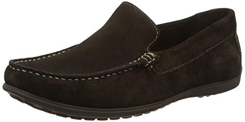
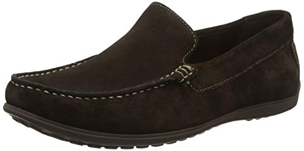
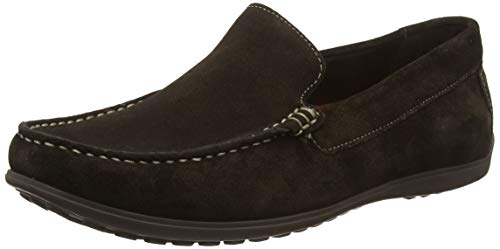

En nuestra pagina podras encontrar calzado nacional de buena calidad para toda la familia, la empresa está principalmente enfocada a la ropa femenina, pero también ofrece artículos para hombre, ropa de niño, accesorios, zapatos, bolsos y otros artículos de moda. La marca fue fundada el 2012, y desde entonces ha mantenido la filosofía de que "todos pueden disfrutar de la belleza de la moda". Contamos con mas de 10 sucursales en todo el pais.
Zapatillas deportivas chunky
De color blanco. Material de suela exterior: Caucho.
El estilo es: Deportivo. Tipo de tirantes: Lazada.
Con tela de forro: Rejilla, tipo de estampado: Liso.
Material exterior: cuerina, material de la plantilla interior: Rejilla.
El tipo de punta: redonda, el tipo de zapato es: Zapatillas Deportivas Chunky.
Sandalias
De color verde, tipo de estampado liso, con tipo de punta: sandalias. Detalles: Diamante de imitación. Tipo del tacón: Tacones esculturales. Tipo: sandalias de dedo, tela de forro: cuerina y material de suela exterior: caucho.
Mocasin
De color Azul Marino, con tipo de estampado liso , tipo de punta redondos. El ajuste de tamaño código estándar. El material exterior es cuerina, material de suela exterior es caucho.
Zapatillas de skate con cordón delantero:
Con estilo preppy,color blanco, con tirantes de tipo Lazada. Su tipo de punta redondos, tela de forro de Cuerina. Para material de suela exterior: Caucho.
